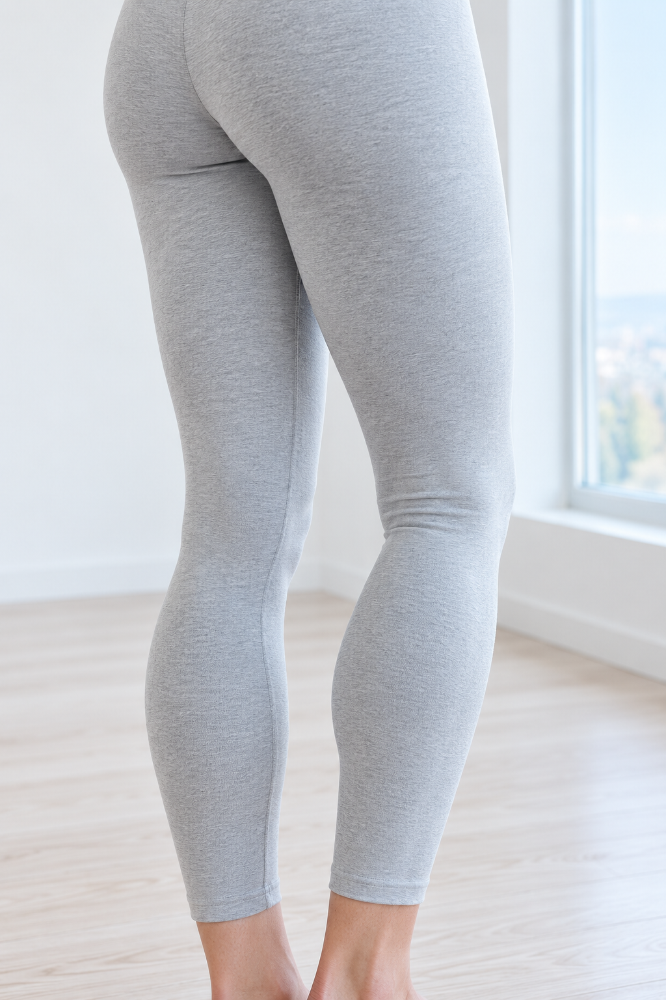

Справочная страница · Колено
Боль в колене
Страница помогает найти справочный источник по выбранной области. Она не определяет причину боли и не назначает применение ОЗОТЭНС.

Что есть в источнике
В памятке о колене рассматриваются нагрузка, отёк и возможность опереться на ногу. Для сильной боли, заметного изменения формы или ограничения опоры выделены отдельные указания об обращении за помощью.
Темы взяты из базы источников проекта, проверенной 05.10.2026. Откройте оригинал для актуального текста. В демо нет адаптированных упражнений, дозировок или индивидуальных рекомендаций. Материалы NHS не подтверждают свойства продукта ОЗОТЭНС.
Перед применением
Безопасность ТЭНС обсуждают со специалистом и сверяют с официальной инструкцией к конкретному прибору. Справочная страница не заменяет эту проверку.
NHS: безопасность ТЭНС (Великобритания)Результат индивидуален. Конкретный эффект и срок не обещаются.